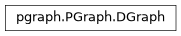
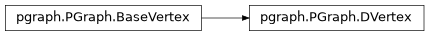
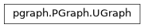
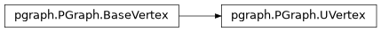

PGraph module
- class pgraph.PGraph.BaseVertex(coord=None, name=None)[source]
Bases:
objectBase class for vertices of directed and non-directed graphs.
- Each vertex has:
namelabelan int indicating which graph component contains it_edgelista list of edge objects that connect this vertex to otherscoordthe coordinate in an embedded graph (optional)
- adjacent()[source]
Neighbours of a vertex (deprecated)
- Returns:
a list of neighbours of this vertex
- Return type:
list of BaseVertex subclass
Deprecated since version use:
neighbours()instead
- closest()[source]
BaseVertex closest to this vertex
- Returns:
closest vertex and its distance
- Return type:
BaseVertex subclass or None, float
Equivalent to
self._graph.closest(self.coord). The vertex must belong to a graph, sinceclosest()searches that graph’s other vertices.>>> from pgraph import UGraph >>> g = UGraph() >>> v1 = g.add_vertex(coord=[0,0], name='v1') >>> v2 = g.add_vertex(coord=[1,1], name='v2') >>> v3 = g.add_vertex(coord=[2,3], name='v3') >>> v4 = g.add_vertex(coord=[4,3], name='v4') >>> print(v1.closest()) (UVertex[v1, coord=(0, 0)], np.float64(0.0))
- Seealso:
_BaseGraph.closest()
- connect(dest, edge=None, cost=None, data=None)[source]
Connect two vertices with an edge
- Parameters:
dest (
BaseVertexsubclass) – The vertex to connect toedge (
Edgesubclass, optional) – Use this as the edge object, otherwise a newEdgeobject is created from the vertices being connected, and thecostandedgeparameters, defaults to Nonecost (float, optional) – the cost to traverse this edge, defaults to None
data (Any, optional) – reference to arbitrary data associated with the edge, defaults to None
- Raises:
ValueError – either vertex has not been added to a graph, or the vertices belong to different graphs
- Returns:
the edge connecting the vertices
- Return type:
v1.connect(v2)connects vertexv1to vertexv2.Note
If the vertices subclass
UVertexthe edge is undirected, and if they subclassDVertexthe edge is directed.Both vertices must already have been added to the same graph, e.g. via
PGraph.add_vertex()– since a graph only ever accepts its own vertex subclass (seeUGraph.add_vertex(),DGraph.add_vertex()), this also rules out connecting aUVertexto aDVertex.
>>> from pgraph import UGraph >>> g = UGraph() >>> v1 = g.add_vertex(coord=[0,0], name='v1') >>> v2 = g.add_vertex(coord=[1,1], name='v2') >>> e = v1.connect(v2, cost=1.414) >>> print(e) Edge{[v1] -- [v2], cost=1.414}
- Seealso:
- copy(cls=None)[source]
Copy a vertex
- Parameters:
cls (UGraph or DGraph subclass, optional) – graph class whose
vertex_copymethod should be used to create the copy, defaults to None- Returns:
a new, unconnected vertex with the same coordinate and name
- Return type:
BaseVertex subclass
If
clsis given,cls.vertex_copy(self)is used to create a vertex of the appropriate subclass for that graph type, otherwise a vertex of the same class asselfis created directly.- Seealso:
- property degree: int
Degree of vertex
- Returns:
degree of the vertex
- Return type:
Returns the number of edges connected to the vertex.
Note
For a
DGraphonly outgoing edges are considered.>>> from pgraph import UGraph >>> g = UGraph() >>> v1 = g.add_vertex(coord=[0,0], name='v1') >>> v2 = g.add_vertex(coord=[1,1], name='v2') >>> v3 = g.add_vertex(coord=[2,2], name='v3') >>> g.add_edge(v1, v2) Edge{[v1] -- [v2], cost=1.414} >>> g.add_edge(v1, v3) Edge{[v1] -- [v3], cost=2.828} >>> print(v1.degree) 2
- Seealso:
- distance(coord)[source]
Distance from vertex to point
- Parameters:
coord (ndarray(n) or BaseVertex) – coordinates of the point
- Returns:
distance
- Return type:
Distance is computed according to the graph’s metric. The vertex must belong to a graph, since the metric is a property of the graph, not the vertex.
>>> from pgraph import UGraph >>> g = UGraph() >>> v1 = g.add_vertex(coord=[0,0], name='v1') >>> v2 = g.add_vertex(coord=[3,4], name='v2') >>> print(v1.distance(v2)) 5.0
- Seealso:
metric()
- edges()[source]
All outgoing edges of vertex
Note
For a directed graph the edges are those leaving this vertex
- For a non-directed graph the edges are those leaving or entering
this vertex
>>> from pgraph import UGraph >>> g = UGraph() >>> v1 = g.add_vertex(coord=[0,0], name='v1') >>> v2 = g.add_vertex(coord=[1,1], name='v2') >>> g.add_edge(v1, v2) Edge{[v1] -- [v2], cost=1.414} >>> print(v1.edges()) [Edge{[v1] -- [v2], cost=1.414}]
- edgeto(dest)[source]
Get edge connecting vertex to specific neighbour
- Parameters:
dest (
BaseVertexsubclass) – a neigbouring vertex- Raises:
ValueError –
destis not a neighbour- Returns:
the edge from this vertex to
dest- Return type:
Note
For a directed graph
destmust be at the arrow end of the edge
>>> from pgraph import UGraph >>> g = UGraph() >>> v1 = g.add_vertex(coord=[0,0], name='v1') >>> v2 = g.add_vertex(coord=[1,1], name='v2') >>> g.add_edge(v1, v2, cost=1.414) Edge{[v1] -- [v2], cost=1.414} >>> print(v1.edgeto(v2)) Edge{[v1] -- [v2], cost=1.414}
- heuristic_distance(v2)[source]
Heuristic distance to another vertex
- Parameters:
v2 (BaseVertex subclass) – the other vertex
- Returns:
heuristic distance between this vertex and
v2- Return type:
Distance is computed according to the graph’s heuristic, see
_BaseGraph.heuristic(). The vertex must belong to a graph, since the heuristic is a property of the graph, not the vertex.>>> from pgraph import UGraph >>> g = UGraph() >>> v1 = g.add_vertex(coord=[1, 2], name='v1') >>> v2 = g.add_vertex(coord=[4, 3], name='v2') >>> print(v1.heuristic_distance(v2)) 3.1622776601683795
- Seealso:
distance()_BaseGraph.heuristic()
- incidences()[source]
Neighbours and edges of a vertex
v.incidences()is a generator that returns a list of incidences, tuples of (vertex, edge) for all neighbours of the vertexv.Note
For a directed graph the edges are those leaving this vertex
>>> from pgraph import UGraph >>> g = UGraph() >>> v1 = g.add_vertex(coord=[0,0], name='v1') >>> v2 = g.add_vertex(coord=[1,1], name='v2') >>> g.add_edge(v1, v2) Edge{[v1] -- [v2], cost=1.414} >>> print(v1.incidences()) [(UVertex[v2, coord=(1, 1)], Edge{[v1] -- [v2], cost=1.414})]
- Seealso:
- Return type:
list[tuple[BaseVertex,Edge]]
- isneighbour(vertex)[source]
Test if vertex is a neigbour
- Parameters:
vertex (BaseVertex subclass) – vertex reference
- Returns:
true if a neighbour
- Return type:
For a directed graph this is true only if the edge is from
selftovertex.>>> from pgraph import UGraph >>> g = UGraph() >>> v1 = g.add_vertex(coord=[0,0], name='v1') >>> v2 = g.add_vertex(coord=[1,1], name='v2') >>> v3 = g.add_vertex(coord=[2,2], name='v3') >>> g.add_edge(v1, v2) Edge{[v1] -- [v2], cost=1.414} >>> print(v1.isneighbour(v2)) True >>> print(v1.isneighbour(v3)) False
- Seealso:
- neighbors()[source]
Neighbors of a vertex
v.neighbors()is a list of neighbors of this vertex.Note
For a directed graph the neighbours are those on edges leaving this vertex
>>> from pgraph import UGraph >>> g = UGraph() >>> v1 = g.add_vertex(coord=[0,0], name='v1') >>> v2 = g.add_vertex(coord=[1,1], name='v2') >>> g.add_edge(v1, v2) Edge{[v1] -- [v2], cost=1.414} >>> print(v1.neighbors()) [UVertex[v2, coord=(1, 1)]]
- Seealso:
- Return type:
- neighbours()[source]
Neighbours of a vertex
v.neighbours()is a list of neighbours of this vertex.Note
For a directed graph the neighbours are those on edges leaving this vertex
>>> from pgraph import UGraph >>> g = UGraph() >>> v1 = g.add_vertex(coord=[0,0], name='v1') >>> v2 = g.add_vertex(coord=[1,1], name='v2') >>> v3 = g.add_vertex(coord=[2,2], name='v3') >>> g.add_edge(v1, v2) Edge{[v1] -- [v2], cost=1.414} >>> g.add_edge(v1, v3) Edge{[v1] -- [v3], cost=2.828} >>> print(v1.neighbours()) [UVertex[v2, coord=(1, 1)], UVertex[v3, coord=(2, 2)]]
- Seealso:
- Return type:
- remove()[source]
Remove this vertex, and all its edges, from its graph
- Raises:
ValueError – the vertex is not connected to a graph
v.remove()removesv, and every edge touching it (incoming or outgoing), from its graph. TheBaseVertexobject itself is not deleted.Note
This is a thin convenience wrapper around
_BaseGraph.remove_vertex().- Return type:
None
>>> from pgraph import UGraph >>> g = UGraph() >>> v1 = g.add_vertex(coord=[0,0], name='v1') >>> v2 = g.add_vertex(coord=[1,1], name='v2') >>> g.add_edge(v1, v2) Edge{[v1] -- [v2], cost=1.414} >>> v2.remove() >>> print(g) UGraph: 1 vertex, 0 edges, 1 component
- Seealso:
_BaseGraph.remove_vertex()Edge.remove()
- property x: float
The x-coordinate of an embedded vertex
- Raises:
ValueError – the vertex has no coordinate
- Returns:
The x-coordinate
- Return type:
- property y: float
The y-coordinate of an embedded vertex
- Raises:
ValueError – the vertex has no coordinate
- Returns:
The y-coordinate
- Return type:
- property z: float
The z-coordinate of an embedded vertex
- Raises:
ValueError – the vertex has no coordinate
- Returns:
The z-coordinate
- Return type:
- class pgraph.PGraph.DGraph(metric=None, heuristic=None, verbose=False)[source]
Bases:
_BaseGraphClass for directed graphs

- Seealso:
_BaseGraphUGraph
- class pgraph.PGraph.DVertex(coord=None, name=None)[source]
Bases:
BaseVertexBaseVertex subclass for directed graphs
This class can be inherited to provide user objects with graph capability.

- Seealso:
- connect(dest, edge=None, cost=None, data=None)[source]
Connect this vertex to another with a directed edge
- Parameters:
dest (BaseVertex subclass) – vertex to connect to
edge (
Edgesubclass, optional) – Use this as the edge object, otherwise a newEdgeobject is created, defaults to Nonecost (float, optional) – the cost to traverse this edge, defaults to None
data (Any, optional) – reference to arbitrary data associated with the edge, defaults to None
- Returns:
the edge connecting the vertices
- Return type:
Unlike the undirected-graph counterpart, the new edge is added only to this vertex’s edge list – it is only discoverable from the start of the directed edge.
>>> from pgraph import DVertex, Edge, DGraph >>> g = DGraph() >>> v1 = g.add_vertex(coord=[0,0], name='v1') >>> v2 = g.add_vertex(coord=[1,1], name='v2') >>> v1.connect(v2, cost=1.414) Edge{[v1] -> [v2], cost=1.414} >>> print(v1.edges()) [Edge{[v1] -> [v2], cost=1.414}] >>> print(g.edges()) {Edge{[v1] -> [v2], cost=1.414}} >>> print(g) DGraph: 2 vertices, 1 edge, 1 component
- Seealso:
- class pgraph.PGraph.Edge(v1=None, v2=None, cost=None, data=None)[source]
Bases:
objectEdge class
Is used to represent directed directed and undirected edges.
Each edge has: -
costcost of traversing this edge, required for planning methods -datareference to arbitrary data associated with the edge -v1first vertex, start vertex for a directed edge -v2second vertex, end vertex for a directed edgeNote
An undirected graph is created by having a single edge object in the edgelist of _each_ vertex.
This class can be inherited to provide user objects with graph capability.
Inheritance is an alternative to providing arbitrary user data.
An Edge points to a pair of vertices. At
connecttime the vertices get references back to the Edge object.graph.add_edge(v1, v2)callsv1.connect(v2)- Seealso:
- connect(v1, v2)[source]
Attach this edge to a pair of vertices
- Parameters:
v1 (BaseVertex subclass) – start of the edge
v2 (BaseVertex subclass) – end of the edge
- Return type:
The edge connects vertices
v1andv2, and is added to the graph that those vertices belong to.Note
The vertices must already be added to the graph.
- Seealso:
- property endpoints: list[BaseVertex]
The two vertices of this edge
- Returns:
start and end vertex
- Return type:
list of BaseVertex subclass
- Seealso:
- next(vertex)[source]
Return other end of an edge
- Parameters:
vertex (BaseVertex subclass) – one vertex on the edge
- Raises:
ValueError –
vertexis not on the edge- Returns:
the other vertex on the edge
- Return type:
BaseVertex subclass
e.next(v1)is the vertex at the other end of edgee, ie. the vertex that is notv1.
- remove()[source]
Remove this edge from its graph
- Raises:
ValueError – the edge is not connected to a graph
e.remove()removesefrom its graph’s own edge collection and from its connected vertices’ edge lists (both, for an undirected edge; the source only, for a directed one – see_BaseGraph.remove_edge()), and clearse.v1/e.v2toNone. TheEdgeobject itself is not deleted – it becomes an orphaned, disconnected shell, and callingremove()on it again raisesValueError.Note
This is a thin convenience wrapper around
_BaseGraph.remove_edge().- Return type:
None
>>> from pgraph import UGraph >>> g = UGraph() >>> v1 = g.add_vertex(coord=[0,0], name='v1') >>> v2 = g.add_vertex(coord=[1,1], name='v2') >>> e = g.add_edge(v1, v2) >>> e.remove() >>> print(g) UGraph: 2 vertices, 0 edges, 2 components
- Seealso:
_BaseGraph.remove_edge()BaseVertex.remove()
- class pgraph.PGraph.UGraph(metric=None, heuristic=None, verbose=False)[source]
Bases:
_BaseGraphClass for undirected graphs

- Seealso:
_BaseGraphDGraph
- class pgraph.PGraph.UVertex(coord=None, name=None)[source]
Bases:
BaseVertexBaseVertex subclass for undirected graphs
This class can be inherited to provide user objects with graph capability.

- Seealso:
- connect(dest, edge=None, cost=None, data=None)[source]
Connect this vertex to another with an undirected edge
- Parameters:
dest (BaseVertex subclass) – vertex to connect to
edge (
Edgesubclass, optional) – Use this as the edge object, otherwise a newEdgeobject is created, defaults to Nonecost (float, optional) – the cost to traverse this edge, defaults to None
data (Any, optional) – reference to arbitrary data associated with the edge, defaults to None
- Returns:
the edge connecting the vertices
- Return type:
Unlike the directed-graph counterpart, the new edge is added to both vertices’ edge lists, so it is discovered from either end.
>>> from pgraph import UVertex, Edge, UGraph >>> g = UGraph() >>> v1 = g.add_vertex(coord=[0,0], name='v1') >>> v2 = g.add_vertex(coord=[1,1], name='v2') >>> v1.connect(v2, cost=1.414) Edge{[v1] -- [v2], cost=1.414} >>> print(v1.edges()) [Edge{[v1] -- [v2], cost=1.414}] >>> print(g.edges()) {Edge{[v1] -- [v2], cost=1.414}} >>> print(g) UGraph: 2 vertices, 1 edge, 1 component
- Seealso: